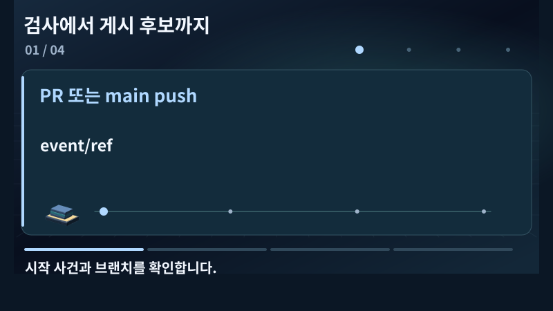
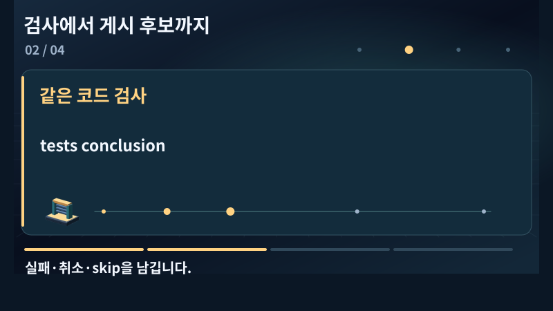
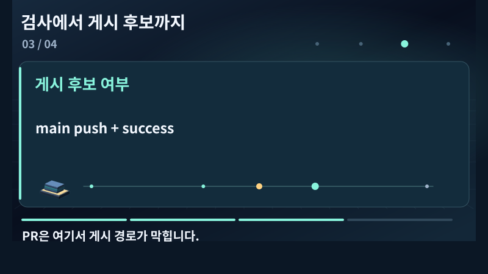
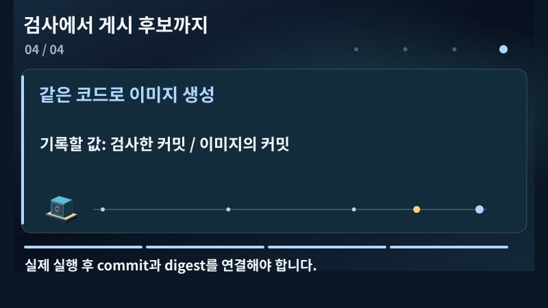

같은 커밋을 검사하고 이미지 후보로 만들기
Pull Request의 테스트는 통과했는데 배포용 이미지가 생기지 않았습니다. 과정용 CI에서는 제안된 코드 검사와 main에 합쳐진 코드의 이미지 발행을 구분합니다. 한 workflow에서 이벤트, job, step이 각각 무엇을 정하는지 읽습니다.
수업 노트북
실행을 확인한 커널은 Python 3.12.15입니다. 예제에 사용한 외부 패키지는 PyYAML 6.0.3입니다.
두 작업이 실행되는 순서 읽기
‘커밋’가 가운데 ‘검사 작업’에 도착한 뒤 오른쪽에 어떤 결과가 남는지 보세요.
같은 커밋의 검사가 통과해야 이미지 후보를 만듭니다.
step은 한 작업 안에서 차례로 진행합니다. job끼리 결과를 이어 쓰려면 needs로 의존 관계를 명시합니다. 아래는 실제 배포 양식에서 실행 조건을 뽑은 연습용 YAML입니다. 외부 저장소나 레지스트리를 변경하지 않습니다.
셀 01 · 검사 다음 작업의 선행 조건 찾기
check는 코드를 검사하고 publish는 검사한 코드의 이미지 후보를 담당합니다. 어느 작업이 다른 작업을 기다리는지 보세요.
아래 YAML은 needs로 검사와 게시 순서를 정하고 if로 게시 조건을 좁히는 발췌입니다. 여기에는 저장소 checkout이나 실제 이미지 빌드·발행 단계가 없습니다. 커밋 문자열 출력과 이미지 발행 성공은 구별해 기록하세요.
import yaml
workflow = yaml.safe_load("""
name: textbook-ci
"on": [pull_request, push]
jobs:
check:
runs-on: ubuntu-latest
steps:
- name: 단위 검사
run: python -m unittest
publish:
needs: check
if: github.event_name == 'push' && github.ref == 'refs/heads/main'
runs-on: ubuntu-latest
steps:
- name: 후보 식별
run: echo "$GITHUB_SHA"
""")
print(workflow["jobs"]["publish"]["needs"])실행 결과
check
check입니다. YAML에서 publish를 아래에 적었다는 사실만으로는 먼저 검사했다는 보장이 없습니다. needs가 작업의 연결을 만듭니다.
과제 02 · PR에서는 이미지를 발행하지 않도록 조건 걸기
아래 함수에서 main 브랜치로 push했고 검사가 통과한 경우에만 True를 반환하세요.
# may_publish(event, ref, ok)를 정의하고 PR 사례를 확인하세요.풀이와 실행 결과 보기
def may_publish(event, ref, ok):
return event == 'push' and ref == 'refs/heads/main' and ok
print(may_publish('pull_request', 'refs/pull/7/merge', True))실행 결과
False
검사에 성공한 PR이어도 False입니다. 레지스트리 쓰기 권한을 검사 작업에 줄 이유가 없습니다.
로컬에서 실패가 다음 작업을 막는지 확인하기
‘종료 코드 1’가 가운데 ‘검사 실패’에 도착한 뒤 오른쪽에 어떤 결과가 남는지 보세요.
검사 작업이 실패하면 뒤 작업은 멈춥니다.
CI runner는 검사 프로그램의 종료 코드를 받습니다. 학생의 노트북에서 별도 Python 프로세스로 작은 검사를 돌리고, 실패한 결과에서 후보를 발행해도 될지 판단합니다.
셀 03 · 실패한 검사 프로세스의 종료 코드
잘못된 기대값을 가진 단위 검사를 실행합니다. 자식 프로세스의 실패가 노트북 전체를 중단시키지 않도록 결과를 받습니다.
import subprocess, sys
test = """import unittest
class TestPort(unittest.TestCase):
def test_container_port(self):
self.assertEqual(5432, 55432)
unittest.main()
"""
run = subprocess.run([sys.executable, "-c", test], capture_output=True, text=True)
print(run.returncode)
print("5432 != 55432" in run.stderr)실행 결과
1 True
1과 True가 보입니다. 실행한 단위 검사가 호스트 포트와 컨테이너 포트를 혼동했습니다. 실제 workflow라면 실패한 검사와 연결된 후보 발행을 멈춰야 합니다. GitHub-hosted runner에서 실행한 기록은 아닙니다.
다시 풀어 보기
실제 환경에서는 검사한 commit, 빌드한 commit, 발행한 이미지 digest가 가리키는 후보를 한 기록에서 대조하세요. 로컬 검사만으로 GitHub에서 이미지가 발행됐다고 기록하지 않습니다.
관련 개념 더 읽기
자동화하기 전에 무엇이 같아야 할까요?
CI는 변경한 코드를 자주 합치면서 검사하는 흐름입니다. 오늘은 74–75일의 같은 앱을 대상으로 어느 커밋을 검사했고 어떤 이미지로 만들었는지 연결합니다. 새 입문 앱의 테스트 성공으로 기존 H1의 문서·대화·출처·저장을 확인한 것처럼 바꾸지 않습니다.
첫 15분에는 7일의 commit/테스트 기록과 71일의 이미지 ID, 74–75일의 배포·데이터 보존 기록을 찾습니다. 소스 commit은 코드 버전을, 이미지 digest는 게시된 이미지 내용을 식별합니다. 실제로 받은 값이 없으면 학생 양식은 null로 두고 제공 합성 예시와 구분하세요.
workflow는 무엇을 보고 시작할까요?
workflow는 자동 작업의 전체 정의입니다. trigger는 그 작업을 시작할 사건입니다. pull_request는 코드 변경을 검토하는 PR 사건이고 push는 브랜치에 커밋이 반영되는 사건입니다. 이 교재의 기준 브랜치 이름은 main이지만 실제 저장소의 기본·보호 브랜치가 같은지는 별도로 확인해야 합니다.
하나의 코드 변경에 PR 검사와 main 검사가 모두 나타날 수 있습니다. 두 실행은 같은 사건이 아니며 대상 커밋도 달라질 수 있습니다. PR이 통과했다고 main에 반영된 커밋의 테스트를 자동으로 통과 처리하지 않습니다. 게시 후보에는 신뢰한 main push의 검사 결과를 사용합니다.
| 이벤트 | 이유 | 게시 |
|---|---|---|
| pull_request | 변경 검토를 위한 검사 | 허용하지 않음 |
| push + refs/heads/main | 합쳐진 실제 커밋을 다시 검사 | 검사 성공 뒤 후보만 |
| 다른 브랜치 push | 현재 템플릿의 게시 대상 아님 | 없음 |
| pull_request_target | 이 수업의 기본 실행 경로 아님 | 추가하지 않음 |
runner와 YAML을 작은 단위로 읽기
runner는 workflow의 job을 실행하는 컴퓨터입니다. 로컬에서 테스트가 됐더라도 runner에는 같은 작업 폴더·Python·의존성이 준비되어야 합니다. ubuntu-latest는 실행 환경 선택이며 내 컴퓨터의 가상환경을 그대로 가져온다는 뜻이 아닙니다. 이 수업은 자체 서버를 runner로 연결하는 실습을 요구하지 않습니다.
YAML은 들여쓰기로 구조를 표현합니다. jobs 아래에 check가 있고 그 안에 runs-on과 steps가 있습니다. steps의 각 하이픈은 순서대로 실행할 항목입니다. uses는 제공 액션을 부르고 run은 셸 명령을 실행합니다. 액션을 부르는 것과 Python 함수를 import하는 것은 다른 실행 방식입니다.
먼저 파일에서 on, jobs, check, steps의 위치를 표시해 보세요. __로 감싼 값은 아직 정하지 않은 값입니다. 문자열을 임의 SHA처럼 채우거나 템플릿 이름만 .yml로 바꾸면 올바른 실행 구성이 되는 것은 아닙니다.
step 순서와 job 의존성을 구분하기
한 job 안의 steps는 순서대로 진행합니다. 서로 다른 jobs는 별도 실행 환경을 가질 수 있으므로 한 job에서 만든 파일이 다른 job에 저절로 남아 있다고 가정하지 않습니다. publish가 같은 커밋을 다시 checkout하도록 적은 이유도 여기에 있습니다.
needs: check는 게시 job이 검사 job에 의존하도록 만듭니다. check가 실패하거나 건너뛰면 기본 성공 경로로 publish에 도달하지 않습니다. failure, cancelled, skipped, not_run을 success와 같은 값으로 묶으면 검사하지 않은 이미지를 게시 후보로 잘못 올릴 수 있습니다.
검사에서 게시 후보까지
이 흐름은 같은 commit을 지키는 준비 설계이며 실제 GitHub 실행 관측이 아닙니다.
| 이벤트와 검사 | 결과 |
|---|---|
| PR · 검사 성공 | 검사로 종료 |
| main push · 검사 실패 | 게시 단계 건너뜀 |
| main push · 검사 성공 | 검사한 커밋으로 이미지 생성 |
같은 커밋에서 검사 결과와 브랜치 조건에 따라 게시 단계가 열리는지 보세요.
검사를 통과하고 게시 조건에 맞는 커밋만 이미지 후보가 됩니다.
- 011
- 022
- 033
- 044

STEP 01 · 이벤트PR 또는 main push
시작 사건과 브랜치를 확인합니다.
event/ref

STEP 02 · check같은 코드 검사
실패·취소·skip을 남깁니다.
tests conclusion

STEP 03 · 조건게시 후보 여부
PR은 여기서 게시 경로가 막힙니다.
main push + success

STEP 04 · publish같은 코드로 이미지 생성
실제 실행 후 commit과 digest를 연결해야 합니다.
기록할 값: 검사한 커밋 / 이미지의 커밋
PR과 main에서 권한이 다른 이유
PR에는 아직 검토 중인 코드가 들어옵니다. 이 코드를 실행하는 검사 job에 이미지 게시 권한이나 배포 비밀을 줄 필요는 없습니다. 제공 템플릿은 PR에서 contents:read만 사용하고, 게시 job은 신뢰한 main push 조건을 충족할 때만 packages:write를 갖도록 나눕니다.
포크 PR의 기본 토큰·비밀 제한은 저장소 설정과 관련됩니다. 기본값이 그렇다는 설명을 실제 계정에서 확인한 결과로 바꾸지 않습니다. 이 수업의 정책은 같은 저장소 PR도 게시하지 않으며, pull_request_target으로 PR 코드를 더 높은 권한에서 실행하는 경로를 만들지 않습니다.
같은 앱의 검사를 CI에 연결하기
자동화할 검사는 74–75일에 넘긴 앱과 같은 자료·설정을 대상으로 해야 합니다. 앱 manifest는 그 파일 목록과 해시를 알려 줍니다. Dockerfile, 의존성 파일, H1 요청·전체 출처·오류 경계를 따로 확인하고 작은 health 예제로 대체하지 않습니다.
로컬에서 실행 가능한 준비 검사와 실제 HTTP·DB 검사는 범위가 다릅니다. SQL 호출 대역이나 순수 벡터 계산이 통과해도 PostgreSQL·컨테이너가 동작했다고 쓸 수 없습니다. 앱 인계 기록에 적힌 실행 범위를 CI 계획에도 그대로 옮깁니다. 현재 실제 Actions 결과는 없습니다.
학생은 examples의 같은 앱 인계 목록을 읽고 테스트가 어느 경계까지 다루는지 표시합니다. requirements가 버전 범위를 포함한다면 그것을 검증된 완전 잠금 파일이라고 부르지 않습니다. 나중에 runner에서 의존성을 해결했을 때 실제 설치 버전과 검사 실패를 기록해야 합니다.
| 근거 | 말할 수 있는 것 | 별도 확인 |
|---|---|---|
| 파일 SHA | 같은 바이트 사본 | 기능·권한의 적절성 |
| 로컬 단위 | 그 입력에서 함수/계약 관측 | 실제 HTTP·DB |
| Docker 빌드 | 실제 성공한 경우 이미지 생성 | 서비스 전체 동작 |
| H1/DB 회귀 | 실제 수행한 사례의 결과 | 미실행 사례·학생 성취 |
검사한 commit으로 이미지를 빌드하기
게시 job은 source commit과 같은 코드를 checkout하고, 그 폴더의 Dockerfile과 컨텍스트를 사용해야 합니다. 앱 파일 해시가 맞더라도 테스트는 다른 commit에서 했거나 빌드 경로가 다른 앱을 가리키면 같은 후보라고 볼 수 없습니다.
이 교재는 source_commit, checkout_commit, tested_commit, build_commit을 별도 기록합니다. 네 칸을 분리하면 어느 단계에서 버전이 달라졌는지 설명할 수 있습니다. 파일에 같은 값이 적혀 있다는 사실과 실제 run에서 그 commit을 사용했다는 사실은 구분해야 합니다.
위 a와 b 반복 문자열은 교육용 입력입니다. 실제 저장소 commit을 읽은 값이 아닙니다. 학생의 실제 build-record에는 run·검사 근거를 확인한 뒤 값을 기록하고, 아직 실행하지 않은 필드는 null로 둡니다.
태그와 digest를 나눠 기록하기
registry는 이미지를 보관하는 곳이며 이 수업의 기본 후보는 GHCR입니다. 태그는 사람이 읽기 쉬운 이름이고 digest는 이미지 내용의 식별자입니다. 전체 commit을 넣은 태그라도 registry에서 다른 이미지에 다시 붙일 수 있으므로 배포 후보는 게시 결과의 digest를 함께 기록합니다.
linux/amd64와 linux/arm64는 서로 다른 실행 플랫폼입니다. 오늘은 검토한 단일 플랫폼만 사용하며 여러 플랫폼 빌드를 필수로 추가하지 않습니다. 이미지 이름·태그·digest·플랫폼이 맞아야 74–75일의 대상과 연결할 수 있습니다. 아직 실제 registry 게시나 digest 관측은 없습니다.
| 항목 | 의미 | 현재 실제 값 |
|---|---|---|
| source commit | 검사/빌드 코드 버전 | 미관측 |
| image tag | commit을 표시한 읽기 쉬운 이름 | 미관측 |
| image digest | 실제 게시 이미지 식별자 | null |
| platform | 대상 CPU/OS 조건 | 미관측 |
| config manifest | 비밀값을 제외한 설정 파일 식별 | 인계 파일과 실제 적용을 구분 |
선언 기록 검사는 무엇을 확인할까요?
check_build_record는 네 commit, 이벤트, 검사 결론, 이미지 정보와 세 manifest 해시가 형식상 맞는지 확인합니다. run_reference와 test_evidence_reference는 근거를 적는 칸이며 함수가 해당 URL이나 파일을 열어 실제 내용을 확인하지는 않습니다.
따라서 declared_fields_complete는 기록 항목이 서로 맞는다는 뜻입니다. actual_ci_verified, actual_registry_verified, deployment_authorized는 여전히 False입니다. 실제 CI·게시를 마친 학생은 권한 있는 사람이 확인한 run과 registry 결과를 근거로 기록해야 하며 로컬 함수의 출력만으로 실제 완료를 채점하지 않습니다.
권한과 비밀값은 필요한 곳에만
workflow 기본 권한은 contents:read에서 시작합니다. registry 게시가 필요한 publish job에만 packages:write를 둡니다. 배포를 다루지 않는 CI 검사에 AWS 관리자 권한이나 배포 키를 추가하지 않습니다. 공식 예제에 attestation이나 OIDC 권한이 보여도 사용 목적 없이 복사하지 않습니다.
외부 입력을 run 코드에 직접 끼워 넣으면 값이 명령으로 해석될 여지가 생깁니다. 템플릿은 필요한 commit·digest를 env로 전달해 검증하는 구조를 읽게 합니다. 이것만으로 배포 어댑터의 입력 검증이나 실제 권한 집행이 끝났다는 뜻은 아닙니다.
| 대상 | 이 수업의 권한 | 남길 기록 | 남기지 않을 값 |
|---|---|---|---|
| PR check | contents:read | event·commit·검사 결론 | 게시/배포 비밀 |
| main publish | contents:read + packages:write | image/digest·run 근거 | 토큰·인증 헤더 |
| 77일 인계 | 검토한 후보 정보 | 설정 해시·미확인 | 실제 키·환경 전체 |
실패를 읽고 실제 설정을 준비하기
실제 실행 환경을 준비할 때는 순서를 정합니다. 먼저 같은 앱·검사 경로와 의존성을 확인하고, 사용할 액션의 공식 저장소·검토한 버전·전체 commit SHA를 기록합니다. 태그 이름을 임의의 40자리로 바꾸는 것이 검토는 아닙니다. runner·기본/보호 브랜치·PR 권한·GHCR 이름과 게시 권한을 맞춘 뒤 템플릿을 다시 검토합니다.
현재는 그 실제 설정과 액션 SHA가 미확정입니다. LIVE_CONFIGURATION.json의 null/HOLD와 workflow-task.yml.template을 읽고 필요한 근거를 적으세요. 첫 HOLD step을 지우는 것만으로 준비가 끝난다고 판단하지 않습니다. 실제 실행을 허용한 수업 환경에서만 검토된 파일을 .github/workflows로 옮겨 PR 검사와 main 검사를 각각 확인하는 후속 절차가 필요합니다.
실패하면 마지막 빨간 표시만 보기보다 실패한 job·step·commit·입력과 오류를 연결합니다. 재실행은 원인을 설명하고 조건을 바꾼 뒤 기록합니다. 실패한 행을 삭제하거나 다음 실행의 성공으로 덮지 않습니다. CI 성공은 AWS 배포나 DB 보존 성공이 아닙니다.
| 지점 | 확인할 대상 | 성급한 결론 |
|---|---|---|
| checkout/액션 | 검토한 SHA·권한·같은 commit | 앱 코드가 틀렸다고 단정 |
| 의존성 | requirements·runner·설치 버전 | 다른 로컬 환경의 성공으로 대체 |
| 앱 검사 | 같은 자료·입력·정상/실패 범위 | skip을 success로 바꿈 |
| 이미지 게시 | 권한·이미지 이름·실제 digest | 태그 문자열만으로 게시 완료 |
77일에 넘길 후보 기록 완성하기
77일은 CI에서 만든 후보를 검토하고 적용·확인·복구하는 순서를 다룹니다. source/checkout/test/build commit, 같은 앱·H1·설정 manifest, run/검사 근거, 실제 게시 digest·플랫폼을 연결해 넘기세요. 실제 실행이 없으면 준비 자료와 빈 실제 기록, 남은 확인 항목을 넘깁니다.